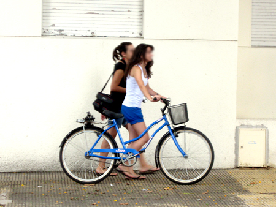

Cycling
Many of the short trips we make by car are ideal for a quick spin on the bike, plus you'll be helping to protect the environment. A staggering 70 per cent of all car trips are less than five miles. Even though most of us own bikes - there are an estimated 27 million across the UK - we just don't use them.

Some of the main benefits of cycling are:
A healthy heart. A major study of more than 10,000 people found those who cycle at least 20 miles a week are half as likely to have heart problems as those who don't cycle at all.
Weight control. Some research suggests we should be burning up at least 2,000 calories a week through exercise (actually far more than used by the recommended 30 minutes of moderately intensive exercise five times a week). Cycling burns about 300 calories an hour, so if you do it twice a day, the numbers soon add up.
It can be part of your routine. If you're worried about making time for exercise, why not see whether it's feasible to cycle to and from work, which would incorporate excellent exercise into your normal daily routine.
Because the bicycle supports your body, cycling isn't necessarily a weight-bearing exercise. This means it's good for people with certain bone and joint problems because it puts very little pressure on them, but it makes it less effective for protecting against osteoporosis.

© Daniel Ingram, 2011 ~ Site Map
All content within is provided for general information only, and should not be treated as a substitute for the medical advice of your own doctor or any other health care professional. We are not responsible or liable for any diagnosis made by a user based on the content of this website. We are not liable for the contents of any external internet sites listed, nor does it endorse any commercial product or service mentioned or advised on any of the sites. See our Links Policy for more information. Always consult your own GP if you're in any way concerned about your health.